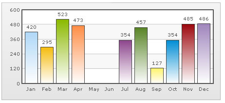
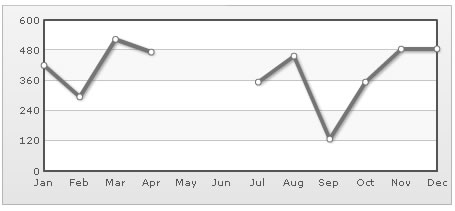
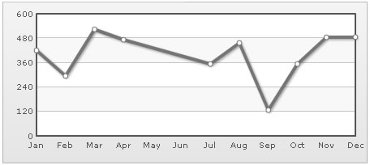
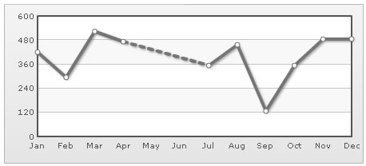

Plotting Discontinuous data |
You might often want to plot charts with incomplete data points - i.e., missing data. For example, when plotting a monthly sales chart, you might not have data for all the months. So, you might just want to indicate the missing data with a blank space on the chart not plotting anything at that particular place. FusionCharts lets you do this very easily. Consider the following XML: |
| <chart > <set label='Jan' value='420' /> <set label='Feb' value='295' /> <set label='Mar' value='523' /> <set label='Apr' value='473' /> <set label='May' /> <set label='Jun' /> <set label='Jul' value='354' /> <set label='Aug' value='457' /> <set label='Sep' value='127' /> <set label='Oct' value='354' /> <set label='Nov' value='485' /> <set label='Dec' value='486' /> </chart> |
| Here, we do not have data for May and June. So, we're not providing any value attribute for the same. The chart will look as under: |
|  |
You can see that there are no columns for May and June in this chart. If you run the same data against a line chart, you'll see the following output: |
|  |
The line chart shows a break for May and Jun as there's no data for the same. If you do not even have data labels for the missing data, you can write empty set elements for the missing data as under: <set /> |
| Connecting Null Data |
In our above line chart, we were showing a break for the month May and June. If you do not want to show this break for May and Jun, and want April to directly connect to July, you can do so using the newly introduced connectNullData attribute in v3. To do so, you just need to set <chart ... connectNullData='1' ..> and the chart will now look as under: |
|  |
This attribute is valid for all the line and area charts. Full XML data for chart reproduced again: |
| <chart showValues='0' connectNullData='1'> <set label='Jan' value='420' /> <set label='Feb' value='295' /> <set label='Mar' value='523' /> <set label='Apr' value='473' /> <set label='May' /> <set label='Jun' /> <set label='Jul' value='354' /> <set label='Aug' value='457' /> <set label='Sep' value='127' /> <set label='Oct' value='354' /> <set label='Nov' value='485' /> <set label='Dec' value='486' /> </chart> |
| Or, if you want to highlight this break while connecting, you can use the dashed feature as under: |
| <chart showValues='0' connectNullData='1' lineDashGap='6'> <set label='Jan' value='420' /> <set label='Feb' value='295' /> <set label='Mar' value='523' /> <set label='Apr' value='473' dashed='1'/> <set label='May' /> <set label='Jun' /> <set label='Jul' value='354' /> <set label='Aug' value='457' /> <set label='Sep' value='127' /> <set label='Oct' value='354' /> <set label='Nov' value='485' /> <set label='Dec' value='486' /> </chart> |
| This will yield the following chart: |
|  |